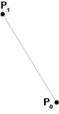

Curve di Bézier
Storia
1911 - Polinomi di Bernstein
I Polinomi di Bernstein sono la base matematica secondo cui vengono costruite le curve di Bezier,
tuttavia questi polinomi non vennero mai applicati fino agli anni 60’.
1959 - Paul de Casteljau

Paul de Casteljau, fisico, matematico e ingegnere della Citroen, realizza un algoritmo per costruire curve e superfici nello spazio.
1962 - Pierre Bézier

Pierre Bézier, ingegnere francese della Renault, formalizza l’espressione matematica delle curve costruite tramite l’algoritmo di de Casteljau usandole per disegnare le carrozzerie delle automobili.
Introduzione
Le Curve di Bézier sono delle curve fondamentali, spesso utilizzate in computer grafica e processazione di immagini, modellazione, ed editor di grafica vettoriale. Come nel caso dei caratteri, quali vengono descritti tramite curve di Bezier, ad esempio i caratteri TrueType utilizzano curve di Bézier quadratiche che sono matematicamente più semplici e veloci da elaborare rispetto a quelle cubiche, ma richiedono più punti per essere descritte. Vengono molto utilizzate anche nell’industria dei videogiochi, in particolar modo per generare strade con curvature dolci nei racing-game, oppure percorsi curvilinei in puzzle-game, o ancora per generare dei fiumi, etc…
.gif)
Cos'è una curva?
E’ un oggetto unidimensionale e continuo
che viene rappresentato con
delle funzioni continue e differenziabili
Esempi: Retta, parabola o circonferenza

Principio fondamentale
Una curva di bézier è definita da un poligono di controllo
formato da un set di vertici detti "Punti di controllo"
che assumono un valore da P0 fino a Pn,
dove con "n" se ne intende l'ordine.
Ad ogni curva viene attribuito un proprio grado il quale è dato dal (numero di vertici -1) del poligono di controllo.
- Una Curva di Bezier Lineare di 1. grado contiene due punti di controllo, viene quindi definita con n = 2.
- Una Curva di Bézier Quadratica di 2. grado contiene tre punti di controllo, viene quindi definita con n = 3.
- Una Curva di Bézier Cubica di 3. grado contiene quattro punti di controllo, viene quindi definita con n = 4.
E così via …



Bezier e Casteljau
Proprio come abbiamo formule o algoritmi per rappresentare circonferenze, parabole o iperboli, necessitiamo di formule e algoritmi per rappresentare curve. A questo problema hanno lavorato 2 matematici: Bezier e Casteljau

Algoritmo di De Casteljau
L'algoritmo di De Casteljau è un altro metodo efficace per calcolare i punti lungo una curva di Bézier.
è un calcolo ricorsivo che divide i segmenti di controllo fino a quando non si ottengono i punti desiderati sulla curva di Bézier.
Come funziona
Ogni lato del poligono di controllo, viene diviso in 2 parti formando un nuovo punto.
i nuovi punti calcolati, collegati tra loro, determinano un poligono con n-1 lati.
ognuno di questi n-1 lati viene suddiviso in 2 parti dando luogo ad una batteria di nuovi punti. questi nuovi punti, collegati tra loro, determinano un poligono con n - 2 lati.
così procedendo si ottiene al termine un solo lato che, suddiviso in 2 parti, permette di determinare il punto sulla curva.
in generale, dati n+1 punti, la curva di grado n è data dalla seguente equazione di ricorrenza
p(t) = (1-t)p-1(t))+tp-1(t) te [0, 1]
con k = 1,2,...., η
i = 0,1,..., n-k
l'algoritmo di de casteljau è in realtà una generalizzazione dell’interpolazione di linee semplici
Curve di bezier lineari
Le Curve di Bezier Lineari sono caratterizzate da due punti di
controllo.
Dati quindi due punti P0 e P1, la Curva lineare di Bézier è determinata da questi due punti e l'interpolazione lineare del segmento che li congiunge.
Ogni lato del poligono di controllo, viene diviso in 2 parti formando un nuovo punto.

La curva è equivalente quindi all'interpolazione lineare
ed è data da:
y P0, P1 = P0 + t(P1 – P0) = (1-t) P0 + tP1 0 < t < 1
Applicando una sostituzione si ha:
Q(t) = (1-t) [ (1-t)P0 + tP1 ] + t [ (1-t)P1 + tP2 ]
Q(t) = (1-t²)P0 + (1-t)tP1 + t(1-t)P1 + t²P2
Q(t) = (1-t²)P0 + 2t(1-t)P1 + t²P2
Essa si muove di moto rettilineo uniforme.
Curve di Bézier quadratiche
Per disegnare una curva quadratica abbiamo bisogno di 3 punti di
controllo.
Dati tre punti P0, P1 e P2, una curva quadratica di bézier è l'interpolazione di due punti,
presi dalla Curva di Bezier Lineare tra P0 e P1 e la Curva di Bezier Lineare tra P1 e P2

Dunque, la Bézier Quadratica è ottenuta da:
yP0,P1,P2 = (1-t)²P0 + 2t(1-t)P1 + t²P2
Di seguito la costruzione:
B(t) = γP0,P1 = (1-t)P0 + tP1
C(t) = yP1,P2 = (1-t)P1 + tP2
D(t) = yP0,P1,P2 = (1 - t)B + tC
Applicando una sostituzione si ha:
Q(t) = (1-t) [ (1-t)P0 + tP1 ] + t [ (1-t)P1 + tP2 ]
Q(t) = (1-t²)P0 + (1-t)tP1 + t(1-t)P1 + t²P2
Q(t) = (1-t²)P0 + 2t(1-t)P1 + t²P2
Q(t) = (1-t) [ (1-t)P0 + tP1 ] + t [ (1-t)P1 + tP2 ]
Q(t) = P0(1-t)² + P1t(1-t) + P1t(1-t) + P2t²
Q(t) = P0(1-t)² + 2P1(t-t²) + P2t²
Q(t) = P0(1-t)² + P1 2t(1-t) + P2t²
Essa si muove di moto rettilineo uniforme.
Curve di Bézier cubiche
Le Curve di Bézier Cubiche sono caratterizzate da
quattro punti di controllo.
Dati tre punti P0, P1 e P2, una curva quadratica di bézier è l'interpolazione di due punti,
presi dalla Curva di Bezier Lineare tra P0 e P1 e la Curva di Bezier Lineare tra P1 e P2

Una Curva di Bézier Cubica è un' interpolazione punto per punto di due Curve di Bézier Quadratiche.
Dati quattro punti P0, P1, P2 e P3, una curva di bézier cubica è l'interpolazione di due punti, presi dalla curva Curva di Bézier Quadratica tra P0, P1 e P2 e la Curva di Bézier
Quadratica tra P1, P2 e P3.
Dunque, la Bézier Cubica è ottenuta da:
yP0,P1,P2,P3 = (1 – t³)P0 + 3t(1 – t)2P1 + 3t²(1 – t)P2 + t³P3
Di seguito la costruzione :
B(t) = γP0,P1 = (1-t)P0 + tP1
C(t) = yP1,P2 = (1-t)P1 + tP2
D(t) = yP0,P1,P2 = (1 - t)B + tC
B’(t) = γP0,P1 = (1-t)P1 + tP2
C’(t) = yP1,P2 = (1-t)P2 + tP3
D’(t) = yP0,P1,P2 = (1 - t)B’ + tC’
Analogamente, per 4 Punti P0, P1, P2, P3 si ha la seguente formula:
C(t) = (1-t³)P0 + 3t(1-t)2P1 + 3t² (1-t)P2 + t³P3
Polinomi di Bernstein
Prendiamo come esempio la costruzione di una curva quadratica secondo Casteljau
yP0,P1,P2 = (1-t)²P0 + 2t(1-t)P1 + t²P2
Per arrivare a questa formula Bezier usa i polinomi di Bernstein
b0,0 (t) = 1
b0,1 (t) = 1-t, b1,1 (t) = t
b0,2 (t) = (1-t)2, b1,2 (t) = 2t(1-t), b2,2 (t) = t2
b0,3 (t) = (1-t)3, b1,3 (t) = 3t(1-t)2, b2.3 (t) = 3t2(1-t), b3,3 (t) = t3
Se adesso noi osserviamo i polinomi quadrati di Bernstein notiamo che i termini che appaiono nella formula di Casteljau sono i medesimi.
Ciò che dobbiamo fare è calcolare i polinomi secondo il grado della curva che si desidera creare e combinarli con i rispettivi punti di controllo.
Ad esempio se voglio ottenere una curva quadratica calcolerò i polinomi di Bernstein quadratici.
Di seguito le formule delle curve applicate ai polinomi:
Curva Lineare
b0,1 (t) = 1-t, b1,1 (t) = t
C=(1-t)P0+(t)P1
Curva Quadratica
b0,2 (t) = (1-t)2, b1,2 (t) = 2t(1-t), b2,2 (t) = t2
C= (P0)(1-t)2 + (P1)2t(1-t) + (P2)t2
Curva Cubica
b0,3 (t) = (1-t)3, b1,3 (t) = 3t(1-t)2, b2.3 (t) = 3t2(1-t), b3,3 (t) = t3
C=(P0)(1-t)³ + (P1)3t(1-t)2 + (P0)3t²(1-t) + (P2)t³
In questo modo possiamo calcolare una curva di qualsiasi grado
Per una curva di 4° grado dovremmo calcolare i polinomi di Bernstein i quali saranno 5 come i punti della curva, che dovranno poi essere inseriti all’interno della formula.
Formula di Bernstein
Per poter calcolare un polinomio di Bernstein utilizziamo la seguente formula:


n = grado della curva
v= 0, . . . , n = v varia da 0 al grado n della curva
Osservazioni
- La curva di Bézier è sempre interna alla poligonale avente come vertici i punti di controllo 𝑃𝑘. Questa proprietà è conseguenza del fatto che i polinomi di Bernstein sono positivi nell’intervallo [0, 1]
- Inizia dal primo punto di controllo, termina all'ultimo, ma non attraversa tutti gli altri punti di controllo. Gli altri punti di controllo sono chiamati punti di controllo fuori curva. E questi punti agiscono come ' pesi' , che dirigono il flusso della curva.
- Per trasformare la curva, basta trasformare il poligono di controllo.
- Se si modifica un solo punto del poligono di controllo, cambia tutta la forma della curva.
- Il primo e l'ultimo punto di controllo coincidono sempre con gli estremi della curva, mentre i punti intermedi generalmente non giacciono all'interno di questa.
Bibliografia
- La curva di Bézier è sempre interna alla poligonale avente come vertici i punti di controllo 𝑃𝑘. Questa proprietà è conseguenza del fatto che i polinomi di Bernstein sono positivi nell’intervallo [0, 1]
- Phasellus et orci elit
- Maecenas vehicula elit et lacus accumsan consequat
- Nam consectetur lacus ante
- Vestibulum et massa dolor
- Aenean condimentum blandit eros non dapibus
- Maecenas quam nulla, porta eu nibh in, cursus iaculis mauris
- Phasellus sit amet nulla eu tellus dictum cursus
- Sed aliquet, ipsum sit amet tempus semper, augue velit consequat mi, et gravida sem purus a quam